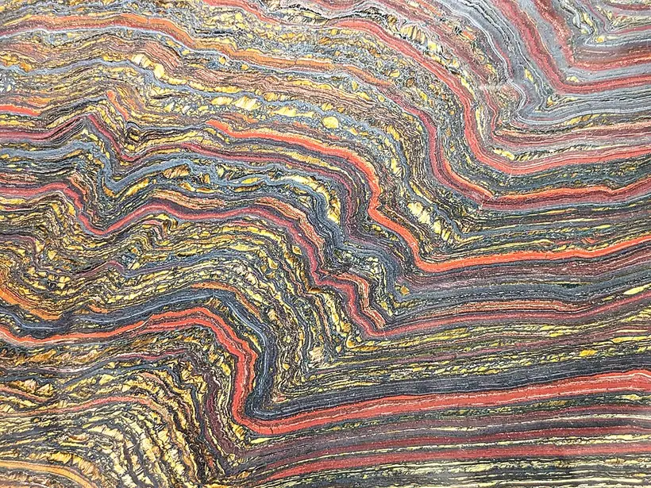
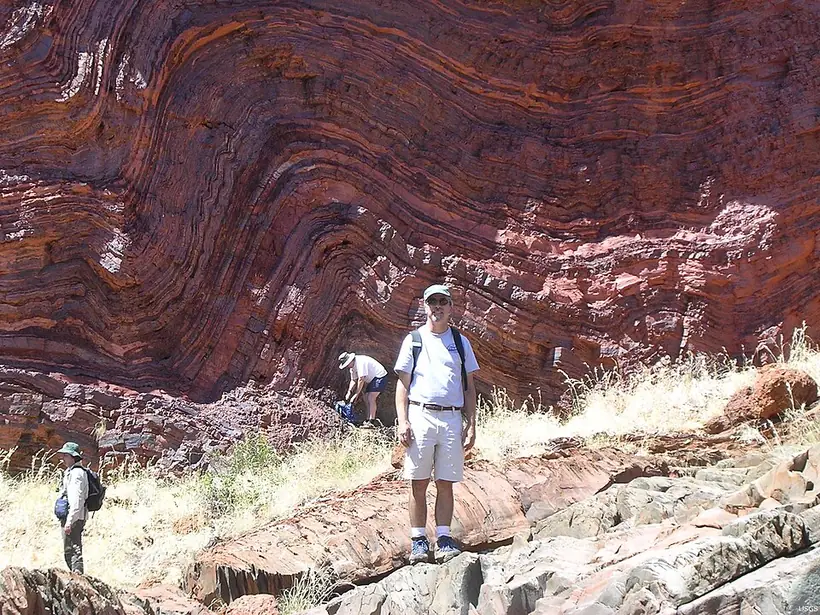
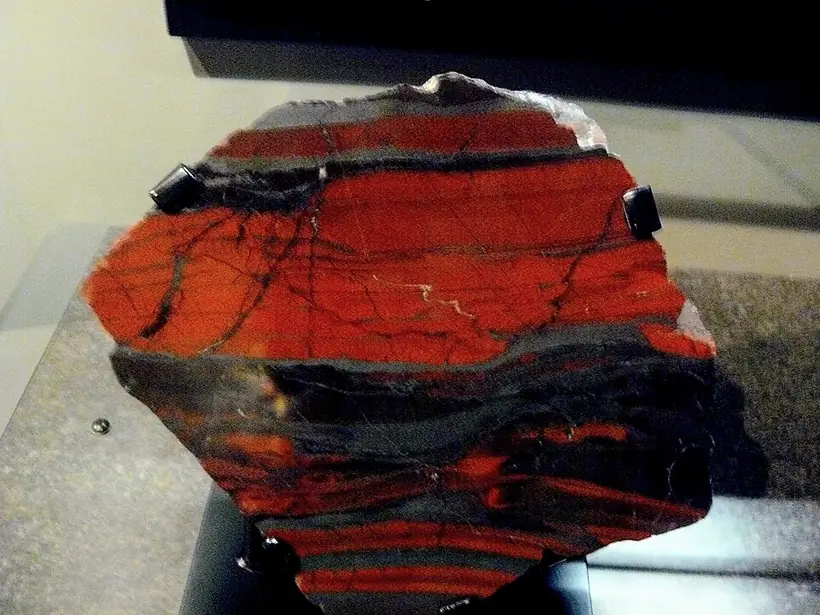

The evidence
Banded iron formations are the most visible sign. Iron dissolves in anoxic water and precipitates when it meets oxygen, so a world with abundant dissolved iron is a world without much oxygen. These formations are common in the early Precambrian and essentially stop afterwards.
Maps, diagrams and images






The sharper evidence is isotopic. Sulphur has four stable isotopes, and in rocks older than about 2.45 billion years their abundances deviate from the expected mass-dependent pattern — mass-independent fractionation, produced by photochemical reactions in an atmosphere without an ozone shield. After that date, the anomaly disappears. Something changed in the atmosphere, and it changed irreversibly.
The cause and the consequences
The cause is cyanobacteria: photosynthesis that splits water and releases oxygen, which evolved at least 2.7 billion years ago and took hundreds of millions of years to overwhelm the sinks — dissolved iron, volcanic gases, and reduced minerals — that consumed it. Oxygen only accumulates once the sinks are full.
The consequences were severe. Methane, a greenhouse gas, is destroyed by oxygen, and the loss of it plausibly triggered the Huronian glaciations — evidence of glaciation at low latitudes around the same time. For most existing life, oxygen was a poison, and the fossil record of that period is thin enough that the die-off is inferred rather than counted.
Documented: the loss of mass-independent sulphur fractionation around 2.45–2.32 billion years ago — the atmosphere changed.
Documented: the rise of oxygen, from cyanobacterial photosynthesis, over hundreds of millions of years.
Documented: glaciations in the same window, plausibly triggered by methane collapse.
Contested: how high oxygen actually got, and whether it stayed there. Estimates for the mid-Proterozoic run from 0.1% to several percent of the modern level.
Why it matters: it is the largest biological change to the planet's chemistry, and the only one we know of that was caused by a single metabolic innovation.
Why it is in the archive
Because it is the archive's deepest-time example of a claim that sounded like a story and turned out to be written in isotopes. The oxygen catastrophe is what happens when a microbe invents something and the planet has to live with it — which is a fair description of several pages in this collection.
Open resources on this topic
- BookNASA Technical Reports Server (NTRS) 20150008372: How Low Can You Go? Maximum Constraints on Hydrogen Concentr — NASA Technical Reports Server (NTRS) · 2014 (Internet Archive, free to read)
- PapersOpen-access articles: DOAJ · PubMed Central · Internet Archive Scholar
- BooksPublic-domain and borrowable copies: Open Library · Project Gutenberg · Google Books
More images
Cite this page
Momin, S. (2026). The Great Oxidation Event. The Larger World Archive. https://drsamonline.github.io/LARGE_GLOBE/great-oxidation-event.htmlMomin, Sohil. “The Great Oxidation Event.” The Larger World Archive, 2026, https://drsamonline.github.io/LARGE_GLOBE/great-oxidation-event.html.Momin, Sohil. “The Great Oxidation Event.” The Larger World Archive, 2026. https://drsamonline.github.io/LARGE_GLOBE/great-oxidation-event.html.@misc{the2026great,
author = {Momin, Sohil},
title = {The Great Oxidation Event},
year = {2026},
howpublished = {The Larger World Archive},
url = {https://drsamonline.github.io/LARGE_GLOBE/great-oxidation-event.html},
note = {Last reviewed 20 November 2026}
}Last reviewed 20 November 2026 · Corrections policy · this page is not peer reviewed
Sources for this page
- Wikipedia, “Great Oxidation Event” — evidence, timing and consequencesen.wikipedia.org
- Farquhar et al. (2000), Science — mass-independent sulphur fractionationdoi.org
- Wikipedia, “Banded iron formation” — the rock that records an anoxic oceanen.wikipedia.org
- Wikipedia, “Huronian glaciation” — the freeze that followeden.wikipedia.org